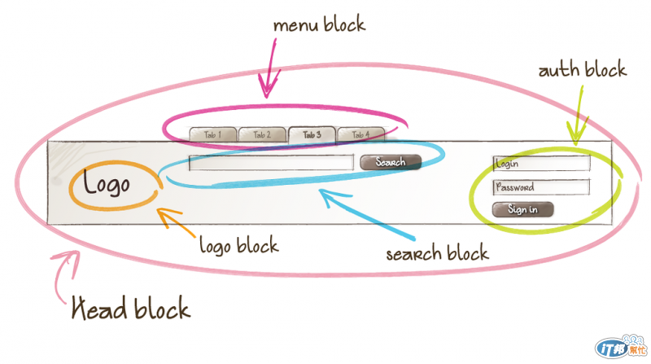
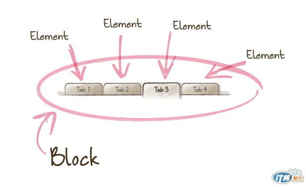
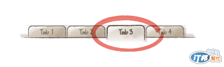

CSS 設計模式
前言
隨著網站逐漸開發，CSS 的程式碼也會越來越繁雜，如果沒有一套方法來管理 CSS，不僅在維護上不方便，程式碼也會變得難以重複使用
為什麼我們需要 CSS 設計模式 ?
如同收納術一般，當我們生活用品越積越多時，我們就需要一些收納的方法來管理，以便在尋找需要的用品時更容易
同樣的，在開發一個網站時，CSS 也會越寫越多，甚至是多人一起偕同開發，這時候如果沒有一套共同的方法或標準來管理我們的 CSS，就會使的開發與維護上效率低落，合作上也不容易快速理解別人的程式，甚至是之後自己看自己的程式碼也無法快速的理解當初的思考邏輯
CSS 設計模式的特色
常見的 CSS 設計模式有 SMACSS、OOCSS 和 BEM，其目的都是為了達到命名語意化、可重用性高、後期維護容易和加載渲染快等優點
但方法是死的，提高工作效率才是唯一目的，如同我們不會為了整理好一個桌面而運用到畢生所學的 20 種收納方法吧 ?同樣的在運用 css 設計模式時，也是視各個專案的狀況來選擇要使用的模式，而非一味遵守這些方法使開發效率未獲提升
良好的 CSS 設計模式
一個良好的 CSS 設計模式會具備以下特質
- 預測性 - Predictable
- 複用性 - Reusable
- 維護性 - Maintainable
- 延展性 - Scalable
SMACSS (Scalable and Modular Architecture for CSS)
SMACSS 介紹
SMACSS 顧名思義是將 CSS 模組化並提高可重用性，被模組化的 CSS 是獨立的，不會被父元素或是 ID 選擇器、標籤選擇器所綁定，能夠活用在頁面上各個地方，並將 CSS 結構分類
SMACSS 分類
SMACSS 分類會使用每個類別的前綴詞加以區分，例如 layout 裡面的 list 會寫成 .l-list，以提高辨識度快速搜尋相關 CSS
Base : 全站設定
定義大部分的 CSS ，避免一直重複撰寫相同的 CSS 樣式，包含 CSS Reset、Reboot，以下為常見的全站設定
注意 Base 的 CSS 絕對不能使用!important，以免後續新增的 CSS 無法覆蓋1
2
3html{font-family:sans-serif}
a {color: red;}
...Layout : 網站布局
所有頁面都會用到的內容，例如 header 與 footer，重複出現的內容以 “功能” 取代 “語意”，例如 書籍列表 與 DVD列表不會個別是
.bookList與.dvdList，而是統一為.listModule : 模組化
Module 是一個獨立的 CSS 組件，可以靈活運用在頁面的任何地方，不會綁定父元素、ID 選擇器和 HTML 標籤，直接將所有 CSS 寫在 class 上，不論要更動 HTML或新增 CSS 都會更有彈性
如下為一個名為.fld的模組，而兩個span隸屬於.fld，所以都以.fld-做為開頭，在依據不同的需求各別寫入不同的 CSS，因為不是直接寫成.fld > span所以後續新增的span，也不會受到影響而需要用更高的權重覆蓋1
2
3
4<div class="fld">
<span class="fld-name">Folder Name</span>
<span class="fld-items">(32 items)</span>
</div>為了方便 HTML 語意化調整，CSS 盡量不指定 HTML tag，以下為常見寫法
1
2
3
4.l-grid {
.l-gird h2 {...}
.l-gird ul {...}
}可以寫成
1
2
3
4.l-grid {
.l-gird-title {...}
.l-gird-list {...}
}此做法也可以優化 SEO，如下
article的權重會大於div1
2
3
4
5
6
7<article class=".l-gird">
<h2 class="l-gide-title"></h2>
</article>
<div class="l-gird">
<h3 class="l-gide-title"></h3>
</div>State : 狀態
State 表達的是一個狀態，與 layout、 module 搭配，也常常利用 JavaScript 動態改變狀態，加上
!important是因為有時候模組會有好幾層架構，防止 State 權重不足無法覆蓋1
2.is-error{display: block }
.is-hidden{display:none }Theme : 主題
運用在網站結構相同，但有多種的主題樣式時，Theme 不會在核心 CSS(all.css) 內，通常都會將其抽離(theme.css)，常見的變動有 color、background-color、border …等
1
2
3//in html
<link rel="stylesheet" href="all.css">
<link rel="stylesheet" href="theme.css">1
2
3
4
5//in all.css
.mod {border: 1px solid}
//in theme.css
.mod {border: red}Typography : 文字排版
建議不要超過 6 種文字大小，以免網站失焦，在建立全域變數(Base)，可以將文字納入規則
1
2
3
4
5//in base
$font-size-base: 14px !default;
$font-l: ($font-size-base) * 1.25;
$font-m: $font-size-base;
$font-s: ($font-size-base) * 0.75;
OOCSS (Object Oriented CSS)
為鼓勵開發者使 CSS 複用性達到最高，用一套 CSS 即可持續開發，不需要隨著開發新增 CSS
結構與樣式分離 (Separate Structure and Skin)
以 bootstrap 為例，btn 只包含結構，btn-primary提供顏色，btn-lg 增加大小，這樣的好處在於不用重複寫結構，只需要依據開發需求新增樣式即可
1 | <div class="btn btn-primary btn-lg"></div> |
或是常用到小技巧也可以使它成為獨立的樣式
1 | .clearfix {overflow: hidden;} |
容器與內容分離 (Separate Container and Content)
常見的容器有 header、footer和格線系統等，與內容分離的好處在於內容不只能使用在特定容器，可以提高內容的複用性
1 | <div class="container"> |
結論
- 使用 OOCSS 時，盡量不要用後代選擇器 (.header ul)，以免無法活用到其他
html tag - 網站規模小時不建議使用，因為設立各個獨立功能會消耗許多時間，後續開發沒有重複用到便失去它的意義
BEM (Block Element Modifier)
BEM 由 Block (區塊)、Element (元素)、Modifier (修飾符)三者所構成，主義的功能是瀏覽 HTML CODE 時，可以透過 class 直接了解 CSS 架構與彼此的關係，不用去細看 CSS 才能了解
BEM結構
Block (區塊)
Block 是模組的名稱，位於模組的最外層，為模組的容器，在設計網站時，我們會先設計出幾個區塊，再對其命名對應的語意
- 不能使用 html tag 和 ID 選擇器，否則難以複用到其他地方
- Block 名稱能清楚表達含意，使用 “功能” 取代 “語意”
- 每個 Block 獨立運作，不能依附在其他的 Block
- 不要定義過多影響外部的樣式 (如 margin)，因為複用到其他地方時不一定有相同的外部樣式
- Block 可以複製到頁面上任何位位置，甚至互相嵌套，但不互相依賴

Element (元素)
Block內部會有許多Element(元素)，在區塊的後方加入雙下底線__以辨識此為該去塊內的元素基本原則 :
- 如果無法拿到
Block外單獨使用，就應該為Element，且不能相依於其他的Block Element能簡單的表達出其結構、布局和意義，在語意上與Block相呼應- 同一個
Block的內Element與Element可以互相嵌套，靈活運用

- 如果無法拿到
Modifier (修飾符)
Modifier(修飾符)的觀念和SMACSS的State、OOCSS的樣式很類似，在區塊或元素後方加上雙中線--以辨識此為該區塊或元素的修飾符，修飾符改變的可以是狀態或是樣式，圖中 Tab3 具有不同的 modifier基本原則 :
- 能直觀的表達出其所代表的外觀和狀態
- 無法脫離
Block和Element單獨使用，因為本身不具備結構 - 改變的僅是外觀和狀態，並不是替換結構
- 不會同時使用一個以上不同值的相同 Modifier，例如:
--red和--green

常見表狀態的用法，此用法為布林值(boolean)，拿掉即是原始狀態
1
<div class="btn btn--active">
另一種常見表樣式的用法
1
2
3
4
5
6// 顏色樣式
.btn--primary {...}
.btn--secondary {...}
// 大小樣式
.btn-lg {...}
.btn-m {...}不同值的樣式可以同時使用
1
<div class="btn btn-primary btn-lg"></div>
連接符
-中線 : 僅連接區塊的多單詞__雙底線 : 用來連接Block(區塊)與Element(元素)--雙中線 : 用來描述Block(區塊)或Element(元素)的狀態 (Modifier)
BEM 常見的問題
可以單獨使用到的功能就不需要 BEM，例如:
1
2
3
4
5
6
7
8//清除浮動
.clearfix {over-flow: hidden}
//隱藏文字
.text-hide {
text-indent: 101%;
over-flow: hidden;
text-trap: no-wrap;
}如果沒有直接的關係，Element 可以不用重複嵌套，盡量避免超過四層，以免降低網頁渲染速度，例如:
1
2
3
4
5
6
7<nav class="menu">
<ul class="menu__list">
<li class="menu__list__item">
<a class="menu__list__item__link"></a>
</li>
</ul>
</nav>可以寫成
1
2
3
4
5
6
7<nav class="menu">
<ul class="menu__list">
<li class="menu__item">
<a class="menu__link"></a>
</li>
</ul>
</nav>沒有直接關係且會複用到頁面其他地方的 Block 應該獨立出來
1
2
3<div class="content">
<div class="content__menu"></div>
</div>可以獨立成
1
2
3<div class="content">
<div class="menu"></div>
</div>增加
Element和Modifier時需要重複撰寫前面的Block與Element很麻煩 ?1
2
3.menu {...}
.menu__list {...}
.menu__item--active {...}Sass3 開始支援
&連接字串可以解決這個問題1
2
3
4
5
6.menu {
&__list {...}
&__item {
&--active {...}
}
}
guideline (指南)
當網站架構越來越大或多人協作時，我們就需要一套規範指南來使大家的程式碼具有一致性，以減少不必要的溝通與衝突，提高開發效率
常見的設計規範
並非每次專案都要遵守所有設計規範，回歸設計規範的目的在於提升加載渲染、開發與維護效率，所以每次的 guideline 都不盡相同，而是視各個專案的複雜程度與參與的開發人員互相溝通而訂
類別階層不超過 “四” 層為原則
不使用
ID，一律使用class使用
OOCSS建立類別工具庫使用
SMACSS來建立 Sass 結構排版結構以
BEM來開發導入 BS4 的
Grid System使用
Sass for來管理擴充元件一率採用駝峰式命名，利用大小寫區分單詞
1
2
3
4// 小駝峰式 (開頭小寫)
.listTitle {...}
// 大駝峰式(開頭大寫)
.ListTitle {...}導入第三方插件在
Sass import vendor使用
REM單位佈局使用
flexbox進行元件設計
sass 7+1 設計模式
base : 全站設定
定義大部分的 CSS ，避免一直重複撰寫相同的 CSS 樣式，概念同於 SMACSS 的 Base
注意 base 的 CSS 絕對不能使用!important，以免後續新增的 CSS 無法覆蓋1
2
3_reset.scss # Reset/normalize 樣式重製
_reboot.scss # 重製部分樣式
_typography.scss # 文字規範components : 組件
為獨立的組件，放到頁面上任何位置、容器都可以自適應延伸，概念同於 bootstrap 中的 component
1
2_button.scss # 按鈕
_menu.scss # 選單layout : 排版
控制頁面的版型，彼此具備獨立性
1
2
3_grid.scss # 格線系統
_header.scss # 表頭
_footer.scss # 表尾pages : 個頁設定
當個別頁面出現唯一且複雜的內容時，就可以單獨切分出來管理
1
2_index.scss # 首頁
_cart.scss # 購物車頁themes : 主題
工具型的 CSS，例如，
.clearfix(清除浮動)1
2
3
4_variables.scss # Sass variables
_functions.scss # Sass function
_minin.scss # Sass mixin
_helper.scss # 工具型的 CSSvendors : 套件
如果網站有載入其他外掛套件，可以統一放到這個資料夾
1
2_bootstrap.scss # Bootstrap
_jquery-ui.scss # jQuery 套件
收納
當網站的 CSS 眾多且複雜，我們使用 Sass 7+1 進行管理時，可以將每個分類建立一個資料夾，將檔案個別放入，並建立一個名為 all.scss 的檔案載入其他所有檔案
1 | //in all.scss |
總結
所有規範都不是構成網站的必要條件，設計規範的目的終究還是為了提高開發與維護的效率，並讓其他共同開發者能對彼此的程式碼一目了然，如果專案使用到 Sass 7+1 ，甚至依照需求可以對分類自行新增或修改，同理其他的規範如 SMACSS、OOCSS 或 BEM，都可以只擷取部分概念使用，再次強調規範是死的，效率才是最終目的 !